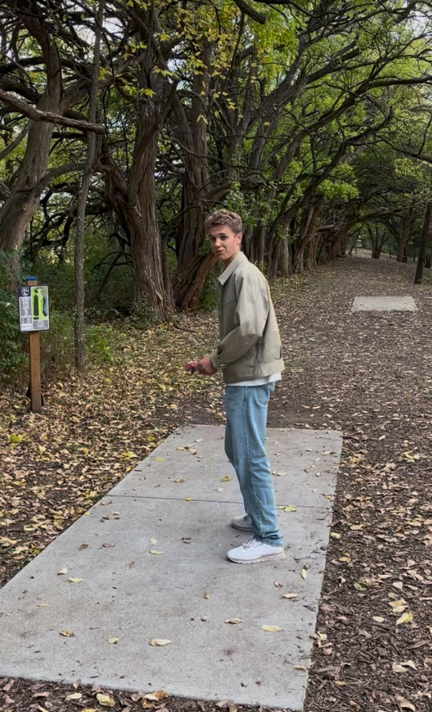
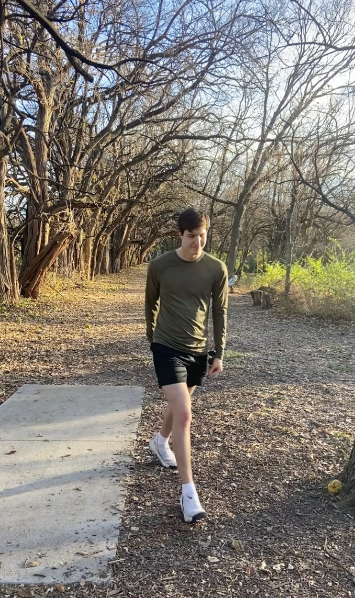
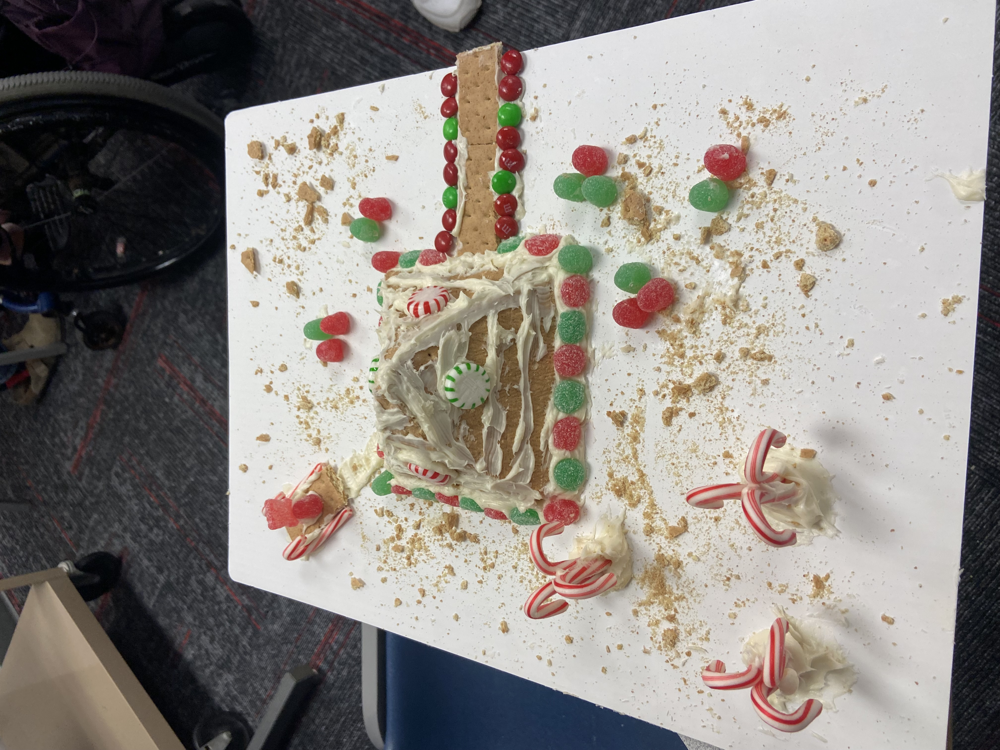
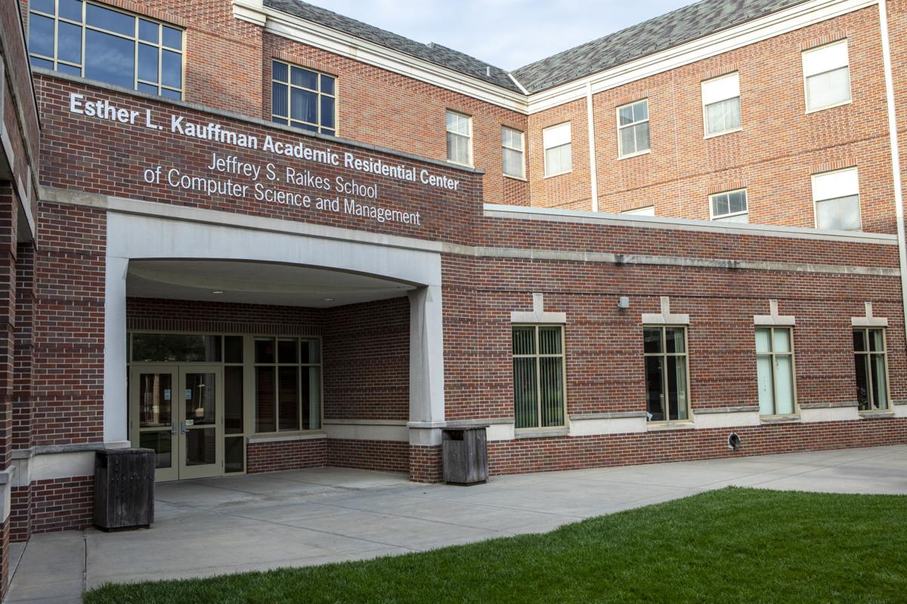
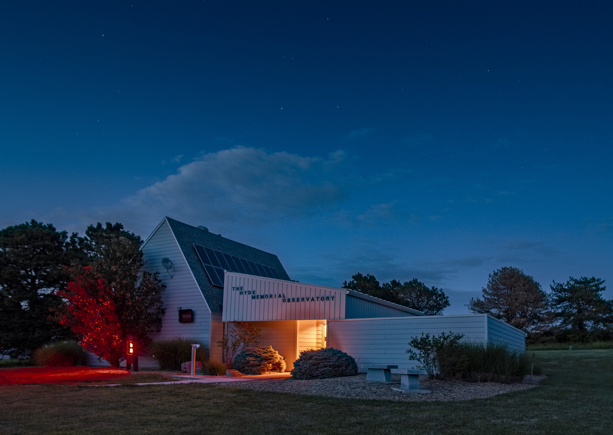

ARD Project 2026

The Four Types of People
- We discussed a framework for understanding four different types of people based on their core traits and motivations.
- We discussed how to recognize these patterns in the people around us whether it's coworkers, friends, and family.

Basketball
For a few of our one-on-ones we headed to a basketball court near Jack's house. This was a fun way to get some fresh air and talk about our weeks!

People City Mission
One Saturday morning we volunteered at People City Mission, spending a few hours serving food. Jack had done this before, but it was Joey's first time. It was a very nice experience, and we both hope to go back!


Disc Golf
We made our way out to the Beal Slough disc golf course and played through a few holes together. Dick golf is a long-time favorite activity for Joey and his friends, but Jack hadn't played much before. It was a beautiful course and a fun activity for both of us!

Gingerbread Houses
This winter we attended the Southeast Project Gingerbread House-Making retreat! This was our second retreat together, and we decided to make a Louvre-style pyramid house, complete with candy cane trees and a sour patch kid on a sled.

Design Studio Tour
We took a tour of the Kauffman Design Studio room that Joey has been working in this semester. He got to show off his project to jack and talk about Computer Science and College in general.

Hyde Observatory
- We visited the Hyde Observatory at Holmes Lake
- Volunteers walked us through what we were seeing including Jupiter and a far-off nebula.
- This was a fun trip as science lovers, and Jack may be interested in volunteering there in the future!